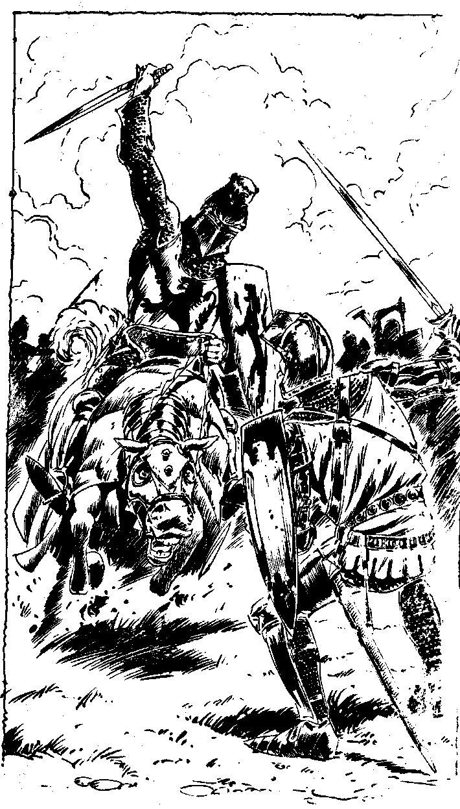

162
The withering volleys from the English longbowmen take their loll of the valiant French knights again and again. The French knights come on in charge after charge, each time retiring to regroup.As they wait for each attack the English bowmen make a V sign with their fingers, indicating that they are ready with more arrows. From their conversation you can gather that it is the French custom to cut off their fingers with which they draw their bowstrings, if ever they are captured.
At last some of the French knights break through and there is fierce hand-to-hand fighting around the Black Prince's position. The Black Prince's horse is killed under him and he and his banner disappear from sight. A French knight whom you recognise from CAIN's descriptions of coats of arms, a strong fighter it seems, is met by a knight whose name, Sir Thomas Chandos, is called out in a warning by his squire. He is an important French noble, Louis de Nevers, Count of Flanders, whose surcoat is adorned with a rampant black lion. Your Psychic Awareness allows you to pick up a myriad thoughts in the din of battle - fear, pride, blood lust, and, somewhere, a strange blank. Sir Thomas Chandos could be struck dead at any time. Will you:
| Thinkstrike Louis de Nevers? | Turn to 247 |
| Attack Louis de Nevers with your sword? | Turn to 179 |
| Thinkstrike Chandos so that he falls, as if dead? | Turn to 193 |
| Wait to see what happens next? | Turn to 200 |